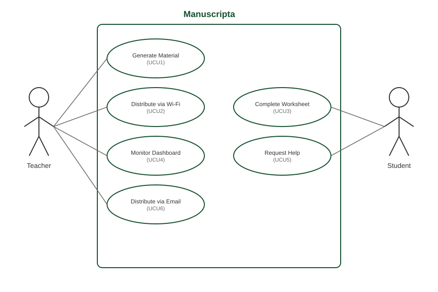

Requirements
Understanding the project origins, challenges, and approach that shaped Manuscripta's development.
Background
Manuscripta was proposed by Professor Dean Mohamedally at UCL in collaboration with the National Autistic Society. The project originated from a practical concern raised in schools, where students were struggling to maintain focus when using iPads in the classroom. While iPads offered the accessibility advantages of a large touchscreen and intuitive tap-based navigation, they also introduced significant distractions. Students were able to switch freely between applications, access the internet and interact with content unrelated to their lessons, undermining the structured learning environments. This problem was found to be particularly acute in specialist SEN schools, where students with autism and complex learning needs require a low-stimulus, highly structured setting, making the disruptive nature of iPads an even greater barrier to effective pedagogy.
Pen and paper, the natural alternative, was not always suitable either. For some students, the physical demands of handwriting hamper engagement, and paper-based materials offer teachers no means of monitoring student progress or providing timely adaptive feedback. Schools therefore found themselves caught between two inadequate options: a digital tool that overwhelmed students with sensory input, and an analogue approach that lacked the flexibility and responsiveness of modern educational technology.
The team was given this problem and asked to design and build a solution from first principles. There were no prescribed technologies or interfaces. The scope, architecture and implementation were determined entirely by the team, guided by ongoing input from project partners and stakeholder feedback.
The Challenge
The core challenge was to develop a digital learning ecosystem that preserved the accessibility benefits of tablet-based education while eliminating the sources of distraction and sensory overload that made iPads unsuitable for SEN classrooms. Any solution would need to meet three interdependent requirements simultaneously.
First, the student-facing interface had to be calm and constrained. This meant eliminating colour, animation, notification systems and unrestricted app access — all features standard on consumer tablets but harmful in this context. Second, the system had to be genuinely useful to teachers, providing tools to create tailored learning materials quickly, monitor the classroom in real time, and respond to individual student needs without disrupting the wider group. Third, given that the schools involved handle sensitive data about vulnerable young people, the system had to operate with no cloud dependency and full compliance with data protection requirements.
A further technical constraint was that commercially available E-ink devices, while ideal for their display characteristics, lack the computational power to run generative AI models locally. This ruled out a simple single-device solution and required the team to architect a system in which AI processing was decoupled from content consumption, running on the teacher's machine and distributing results to student devices over a local network.
Our Approach
Manuscripta addresses these challenges through a two-component system. The teacher application runs on a Windows laptop with an AI-capable chipset and uses local LLM models such as Qwen and IBM Granite to generate educational materials including quizzes, worksheets and polls. The teacher can specify the topic, target age group and reading level, and the model produces content accordingly without any internet connection. Materials are then distributed to student devices over a local area network.
The student application runs on Android-based E-ink tablets, such as those manufactured by Boox and AiPaper, as well as on Kindle and reMarkable devices. The monochromatic, low-refresh display of these devices eliminates the audiovisual stimulation associated with standard tablets, and the application runs in kiosk mode to prevent students from navigating away from their assigned material. Students can annotate worksheets using a stylus, submit answers to quizzes and polls, and raise a discreet help request visible only to the teacher.
The teacher dashboard provides a live overview of all connected devices, showing each student's status and aggregating quiz and poll responses anonymously. All data remains on the local network and is never transmitted to external servers, ensuring that no personally identifiable student information is stored or processed beyond the classroom.
Project Goals
Manuscripta aims to reduce sensory overload for students by delivering content on monochromatic E-ink displays, which eliminates the bright colours, notifications and unrestricted app access associated with standard tablets. The system is designed to improve engagement for quieter or more anxious students by providing a discreet help request feature that alerts the teacher without drawing attention to the individual. It also supports varying reading levels and learning needs through AI-generated content that can be adjusted in complexity on demand.
For teachers, Manuscripta replaces time-consuming manual worksheet creation with an AI content pipeline that produces tailored quizzes, worksheets and polls using on-device AI models. The platform provides a real-time monitoring dashboard that shows every student's status, help requests, and device health without requiring the teacher to move around the classroom. Additionally, it enables remote classroom controls such as screen lock and session management from a single Windows application.
From a technical perspective, the project demonstrates a fully on-device AI pipeline integrated into a practical classroom tool with no cloud dependency, using local language models running on the teacher's laptop. The system is designed with a low-latency local network protocol capable of serving up to 30 simultaneous E-ink devices, and features a modular architecture where individual components, including the networking layer and AI pipeline, can be adapted for other educational or assistive technology contexts.
Requirement Gathering
To gather requirements, we conducted semi-structured interviews with stakeholders across three stages: an initial client interview with representatives from the National Autistic Society, a technical requirements meeting with Professor Dean Mohamedally and domain expert Atia Rafiq, and a showcase demonstration where we received feedback from teachers, industry partners, and academic reviewers. Interviews followed a question-and-answer format, with questions prepared in advance and responses used to validate and refine our initial specification.
Q: We are currently assuming an age range of 11 to 18. Is this representative of your cohorts?
A: Yes.
Q: How would students interact with their E-ink tablets?
A: A mixture. Currently we mostly use iPads and some Windows tablets, which allow for a variety of access needs including touch with accommodations, stylus, head tracking, mouse and eye-gaze.
Q: What types of teaching material are most used in the classroom?
A: Worksheets and quizzes would be useful, also comprehension tasks, but mostly focused on non-fictional texts.
Q: Would the system be allowed to record student data across a time period for monitoring performance?
A: No identifiable data should be stored with a third party.
Q: Would it be useful to generate class-wide student performance reports?
A: This may be useful but not essential, since for smaller class sizes student performance is easier to track.
What we changed
The data privacy response directly led to our decision to operate entirely over a local network with no cloud storage. The confirmation of stylus and touch input informed our decision to support both interaction modes in the Android application. The emphasis on worksheets and comprehension tasks shaped the material types we prioritised in the AI generation pipeline.
Impact
Schools handling sensitive data about vulnerable young people can deploy Manuscripta with confidence that no student information leaves the school premises, ensuring full GDPR compliance without any additional configuration.
Following the initial client interview, we conducted a second requirements meeting with Professor Dean Mohamedally and Atia Rafiq, a medical professional invited as a domain expert. Atia uses E-ink devices in her practice, where doctors distribute patient forms as PDFs, she annotates them with a stylus, and returns completed forms via the device's send-to-email feature. She was brought in to demonstrate this workflow and suggest improvements relevant to Manuscripta.
Device Compatibility Beyond Android
The meeting confirmed the system must support non-Android E-ink devices such as reMarkable tablets, which cannot run Android applications. Atia's demonstration validated email-based PDF delivery as an established real-world workflow, already used in healthcare settings where doctors distribute and receive annotated forms via the same mechanism. For these devices, the teacher exports materials as PDFs and sends them via email. The student annotates using the native stylus and returns work via send-to-email, with anonymity preserved through unique identifiers in email titles.
What we changed: We confirmed two parallel delivery methods: direct Wi-Fi for Android tablets and email-based PDF delivery for non-Android devices.
Impact: Schools using mixed device types can deploy Manuscripta without being restricted to a single hardware ecosystem.
On-Device AI Requirements
All AI processing must occur locally on the teacher's Windows laptop with no cloud dependency, covering content generation, assessment and future handwriting recognition. Qwen was selected as the primary on-device language model, with IBM Granite retained as a fallback for less capable hardware. Both models are managed via Ollama.
How we addressed this: Fully local AI processing was a core requirement from the outset, narrowing model selection to on-device options only. Qwen was chosen as the primary model for content generation due to its ability to produce well-structured, correctly formatted materials. IBM Granite is retained as a fallback for hardware that cannot support Qwen, and is used for smaller tasks such as generating feedback. Both run entirely on the teacher's laptop via Ollama without an internet connection.
Impact: Teachers can generate personalised content in schools with restricted or no internet access, and the system remains fully functional on a standard school network without any external dependencies.
Handwriting Recognition
The meeting identified handwriting recognition as a desirable capability, specifically parsing annotated PDFs returned from non-Android devices, including tick boxes and handwritten answers across the 11 to 18 age range.
What we changed: Added as a should-have requirement. Recognition of returned PDFs was not completed within the project timeline and is documented as future work in the evaluation section.
Impact: Automating marking of returned worksheets would significantly reduce teacher workload and remains a valuable direction for future development.
Content Accessibility Features
The AI pipeline should support reading level adjustment, text summarisation and content simplification on demand to meet the varying cognitive needs of SEN students.
What we changed: Reading level adjustment and text simplification were confirmed as must-have features in the content generation pipeline.
Impact: Teachers can generate the same material at multiple difficulty levels in seconds, making differentiation practical rather than time-consuming.
Local Data Persistence
Professor Mohamedally emphasised that student work must be saved locally to the device and not lost if a session is interrupted or the network drops.
What we changed: The Android Room database was designed to persist all student responses locally, with sync to the teacher dashboard occurring separately.
Impact: Local persistence ensures continuity regardless of network conditions, avoiding disruption that could cause significant distress for neurodiverse students.
At the project showcase, we demonstrated Manuscripta to teachers, industry partners and academic reviewers. The feedback primarily validated our existing design decisions rather than introducing new requirements.
NAS Feedback: Narrative Framing
Mareli Smit of the National Autistic Society highlighted the economic argument for E-ink tablets: a one-off investment in a set of devices replaces the recurring cost of printed textbooks, worksheets and other physical materials. This feedback informed how we positioned the project's value proposition.
Impact: This reinforced the case for E-ink tablets as a cost-effective long-term alternative to printed materials, particularly in SEN settings where differentiated resources at multiple reading levels would otherwise require significant ongoing expenditure.
NAS Feedback: Shared Device Model
Mareli Smit recommended that tablets should belong to the class rather than individual students, with devices handed out at the start of each lesson and collected afterwards. This contradicted earlier guidance from Professor Mohamedally on persisting student data across sessions.
What we changed: We implemented a database wipe on device pairing, giving each student a fresh experience every lesson. This simplifies device management for teachers and avoids privacy concerns around students accessing previous users' work.
Showcase Validation
Remaining feedback from attendees validated our core design decisions: the choice of E-ink devices for distraction reduction, the fully local AI processing approach, and the real-time monitoring dashboard.
Microsoft: Deployment Simplification
"Foundry Local bundles all AI into one executable that you can ship with the app. It reduces overhead on setup considerably." - Microsoft Representative
What we considered: This was evaluated as a potential approach to simplifying deployment. Ultimately, we retained Ollama for model management as it was already integrated into our workflow and supported our two-model architecture. The teacher application includes a guided setup UI that handles dependency installation as a one-off process, which Mareli Smit confirmed would be acceptable for teachers.
UCL Academic: Device Identification
"A tag on each device would make it easier to identify. The device should not be able to change its alias, otherwise students could exploit this." - UCL Teaching Assistant
What we implemented: We added fixed device identification using a generated device ID that cannot be changed by the student, ensuring reliable tracking across sessions without compromising anonymity.
Personas
We developed two personas based on our stakeholder consultations. Jon Kirk was developed from feedback provided by teachers consulted during the project, and Tim Jones was developed from insights provided by Marie-Louise Holmberg and Mareli Smit of the National Autistic Society, reflecting characteristics of students with Autism Spectrum Disorder and dyslexia in SEN settings. These personas were used throughout the project to ground design decisions in real user needs.
Jon is preparing a History lesson for a mixed-ability class of 12 students. He uses the Windows application to generate a reading comprehension worksheet at two difficulty levels in under a minute, distributes it to all connected tablets simultaneously, and monitors from his desk which students have started, paused or raised a help request.
Tim receives the worksheet on his E-ink tablet. He works through it at his own pace using the stylus, requests help discreetly when he gets stuck on a reading passage, and submits his answers without having to speak or draw attention to himself.


Use Cases
The following use cases illustrate how teachers and students interact with Manuscripta in typical classroom scenarios. A UML use case diagram is provided above, followed by detailed descriptions of each case.

- Teacher opens Lesson Library in the Windows application and clicks "Create New Worksheet"
- Teacher selects material type: Worksheet
- Teacher enters topic "Water Cycle", reading age "8 years old", actual age "12 years old", duration "30 minutes"
- The on-device AI generates the worksheet locally including questions like "Which process forms clouds?" with options: Evaporation, Condensation, Precipitation
- Teacher reviews the generated questions and sees they align with the learning objectives
- Teacher manually adds a question: "Describe what happens to water droplets in a cloud"
- Teacher selects "Water Cycle Worksheet" from the lesson library
- Teacher opens Classroom dashboard and views 15 connected Boox tablets listed by device name
- Teacher selects all 15 devices for deployment
- Teacher clicks "Deploy to Devices" and system pushes the worksheet over local Wi-Fi within 5 seconds
- All 15 students receive notification on their Boox tablets: "New worksheet available"
- Student receives notification on Boox tablet: "New worksheet available"
- Student taps to open the Water Cycle worksheet in the Android application
- Student reads the first question: "Which process forms clouds?"
- Student taps on the answer "Condensation" from the multiple-choice options
- Student completes remaining questions and taps "Submit Worksheet"
- Teacher views the Classroom dashboard showing all 15 connected tablets
- Dashboard displays real-time status: 12 devices show "On Task", 2 show "Needs Help", 1 shows "Disconnected"
- Teacher clicks on Student 7's device card which shows "Needs Help" status
- Teacher sees Student 7 is stuck on question 3: "What happens during evaporation?"
- Teacher walks over to provide individual support while others continue working
- Student 7 is unsure how to answer "What happens during evaporation?" on their Boox tablet
- Student taps the "Raise Hand" button on the app's status bar
- System sends alert to teacher's Windows laptop dashboard over local Wi-Fi
- Teacher sees Student 7's device card change from "On Task" to "Needs Help" with a hand icon
- Teacher approaches Student 7 to provide individual support
- Teacher generates a material in the Windows application
- Teacher exports the material as a PDF
- Teacher sends the PDF to the student's device email address
- Student opens the PDF on their E-ink device
- Student annotates the worksheet using the device's native stylus tools
- Student returns completed work using the device's send-to-email feature
User Interactions
This diagram below, which uses a worksheet on the water cycle as a sample material, illustrates how the teacher portal and the student's Android app are expected to interact to complete core tasks like content creation, distribution, learning activities and real-time monitoring.
Taps "Raise Hand" button
Content distribution
Feedback and marks
Screen lock and unlock commands
Progress updates
Help requests
Completed submissions
The above workflow describes interaction via the Android student application. For non-Android E-ink devices such as reMarkable and Kindle tablets, an alternative delivery method is supported. The teacher exports the generated material as a PDF and sends it to the device via email. The student annotates the worksheet using the device's native stylus tools and returns the completed work using the device's built-in send-to-email feature. This workflow was validated with Atia Rafiq, a domain expert who uses E-ink devices professionally in a healthcare context where doctors distribute and receive annotated forms via the same mechanism.
MoSCoW Requirement List
Requirements were prioritised using the MoSCoW method, reflecting input from stakeholder interviews with the National Autistic Society and teachers consulted during the project, and validated against the technical constraints of E-ink hardware and on-device AI processing.
Must Have
Functional Requirements
- MAT1: The application must provide a Lesson Library to store, manage and organise all generated content.
- MAT2/MAT3A: The Lesson Library must be organised using the hierarchical structure of units, lessons, and materials.
- MAT4: The application must include a search function for teachers to locate materials across all units and lessons.
- MAT5: The application must allow a teacher to generate and store materials using one or more on-device GenAI models.
- MAT6: When creating a new material, the application must prompt the teacher for the material type.
- MAT7: When creating a new material, the application must prompt the teacher for a textual description of the expected content.
- MAT8: When creating a new material, the application must prompt the teacher to upload zero or more source material documents.
- MAT12: After creating a new material, the teacher must be able to modify and refine its contents via an editor.
- MAT15: The application must allow the import and display of static images and PDF documents as lesson materials.
- MAT16: The application must allow the teacher to highlight and define keywords or vocabulary for each material.
- MAT17: When creating a new material, the system must provide a means for adjusting the text complexity and readability of the generated material.
- CON1: The application must provide a continuously updated dashboard displaying aggregated and anonymised data.
- CON2A: The dashboard must include an overview of the individual statuses of each student tablet.
- CON3: The dashboard must include a panel displaying the number of connected devices.
- CON5: The dashboard must include a panel indicating devices which require attention.
- CON6: The application must include a panel providing device-specific controls.
- CON7: The dashboard must include a chart summarising students’ responses to quizzes or polls.
- CON8: The dashboard must include a panel for launching and delivering a previously created material to all students.
- CON10: The dashboard must support simultaneous differentiation for deployment.
- CON11: The application must allow the teacher to export and save session data to a local file for offline tracking.
- CON12: The dashboard must provide a visual alert when a specific student triggers a "Help" request.
- MAT1 (Student): The application must be able to display all supported material types.
- MAT2B (Student): The application must display feedback as configured by the teacher.
- MAT3 (Student): The application must provide a "Try Again" option for incorrect responses.
- MAT4 (Student): The application must include buttons to simplify, expand on, or summarise the text.
- MAT5 (Student): The application must provide students with AI assistance tools.
- MAT6 (Student): The application must display the "Key Vocabulary" defined by the teacher.
- MAT7 (Student): The application must include a "Raise Hand" button.
- MAT8 (Student): The application must support handwriting input.
Non-Functional Requirements
- NET1 (Teacher/Student): Distribute material content to at least 30 students’ tablets through the same LAN.
- NET2 (Teacher/Student): Receive responses from student tablets over the LAN.
- ACC1 (Teacher): The user interface must be intuitive for teachers with standard computer literacy.
- ACC2 (Teacher): The teacher must be able to configure their application settings and preferences on their laptop.
- ACC3A (Teacher): The teacher must be able to enable and disable accessibility features on a per tablet basis.
- SYS1 (Teacher): The application must be compatible with both Intel and Qualcomm AI chipsets.
- SYS3 (Teacher): The application must be packaged for distribution via the Microsoft Store.
- ACC1 (Student): The application must support tapping, typing, and styluses.
- ACC3 (Student): The application must include a text-to-speech button if enabled.
- ACC4 (Student): The application must have a monochromatic display with minimal audiovisual stimuli.
- SYS1 (Student): The application must be compatible with commercially available e-ink tablets.
- System 1-4: The system must valid user inputs, display clear states, anonymise data, and support 30 concurrent low-latency connections.
Should Have
Functional Requirements
- MAT13: Each material should be associated with metadata such as deployment status and creation date.
- MAT18: The application should provide the option to mark individual student responses manually or via AI.
- MAT19: The application should provide an optional point system.
- CON14: The dashboard information should be split into two different tabs or sections.
- MAT9A (Student): Question feedback should identify correct parts of reasoning and guide towards the right answer.
Non-Functional Requirements
- ACC5 (Student): The application should include animated mascots or avatars to act as learning companions.
Could Have
Functional Requirements
- MAT14: The application could provide an AI-powered conversational teaching assistance for lesson planning.
- CON4: The dashboard could include a panel displaying the average student’s progress.
- CON13: The dashboard could provide a "Live View" of the current screen of a specific student.
Non-Functional Requirements
- SYS2: The application could be secured through local user authentication.
- ACC2 (Student): The application could support eye gaze control via third-party hardware.
Won't Have (Out of Scope)
- Any cloud-based functionality.
- The collection or management of any personally identifiable student data.
- Running GenAI models directly on the E-ink devices.
- Performing AI-driven image generation.
- Support for student devices other than Android-based E-ink tablets.
Project Partners
Acknowledgements and partner contributions that made Manuscripta possible.
Acknowledgements
The team would like to thank Professor Dean Mohamedally from UCL for his supervision and guidance throughout the project. We are grateful to Marie-Louise Holmberg, Mareli Smit and other teachers from the National Autistic Society for their input on the needs of autistic learners and their feedback on the application design. We also thank Dan Cooper, a speech and language therapist at Richard Cloudesley School, for his input on accessibility requirements for SEN students. We also thank Dr Atia Rafiq, whose demonstration of e-ink workflows in a professional healthcare context informed our approach to non-Android device support.
Partners
Partners who contributed to the project include:
- IBM, who provided technical guidance on model integration and the Granite language model, used as a fallback model in the teacher application;
- Qualcomm, who supplied an Android tablet device used during development and testing;
- National Autistic Society, who contributed domain expertise on the needs of autistic learners and provided stakeholder feedback through Marie-Louise Holmberg and Mareli Smit; and
- UCL, with academic supervision provided by Professor Dean Mohamedally.